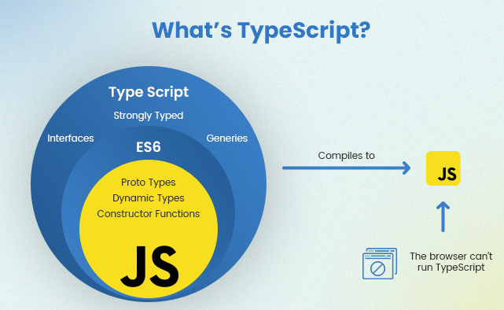

Typescript е език за програмиране, разработен и поддържан от Microsoft. Проектиран е под ръководството на Андерс Хейлсберг,
който e известен с това, че е ръководил и разработването на езика C#. TypeScript е пуснат за първи път през октомври 2012 г.
Той е проектиран, за да подпомогне разработването на по-големи приложения, защото помага да се избегнат често срещани грешки.
Езикът може да предотврати загубата на време за отстраняване на грешки и това улеснява екипи от хора да работят по един и същи проект.
TypeScript се нуждае от компилатор, който може да преобразува синтаксиса на TypeScript в стандартен JavaScript. Този компилатор се нарича транспилатор и е предназначен да преобразува един език за програмиране в друг.
TypeScript файловете са с разширение .ts, а след като се компилират ще се получат .js файлове като изход.
ТypeScript позволява да използваме нашите JavaScript умения по-ефективно. Той често може да бъде описван като
“надмножество на JavaScript“ или „JavaScript с типове“. Това означава, че всяка програма, написана на JavaScript, също е програма и на TypeScript. Следната картинка показва връзката между двата езика:

Фиг.1: Връзка между TypeScript и JavaScript
[1]
JavaScript и TypeScript
Както знаем JavaScript се счита за основния скриптов език за създаването на уеб страници – можем да го използваме както за front-end,
така и за back-end. Но дали е разработен за създаването на големи и сложни уеб приложения? – Отговорът тук е НЕ.
Нека разгледаме
следната функция, която служи за събиране на две числа. Какво ще се случи ако потребителят въведе ‘5’ и 10 като аргументи на функцията?
Ако не знаеш натисни тук и провери ->
Ще върне резултат 510, което обаче не е резултатът, който ние искаме да получим.
Това е един от основните проблеми, на които TypeScript дава решение – той ни дава възможността да определим типа на параметрите при
задаването на функцията. Така тя ще приема само аргументи от тип number, а при зададени аргументи от друг тип ще бъде изведена грешка.
Ако разгледаме двата езика – JavaScript и TypeScript, тогава ще видим, че всеки JavaScript код е валиден TypeScript код. Можем да кажем, че:
JavaScript + повече функции = TypeScript
Подобренията, които TypeScript ни дава са:
Освен динамичен е и статичен език, което му позволява да проверява типа на променливите, функциите и т.н.
Идентифицира грешките по време на компилация, което води до по-малък брой грешки по време на run-time
Категория
TypeScript
JavaScript
Разработен от
Microsoft - 2012
Берндан Ейх(Netscape) - 1995
Вид
Статичен и динамичен
Само динамичен
Компилиране
Трябва да бъде компилиран
Не трябва да се компилира
Проверка на типа
Има
Няма
Функционалности
Поддържа generics и interfaces
Не поддържа generics и interfaces
Проверка за грешки
Грешките могат да бъдат намерени по време на compile time
Грешки могат да бъдат намерени само по време на run-time
По-подходящ за
Големи проекти
Малки проекти
Таблица 1: Сравнение между JavaScript и TypeScript
Инсталиране
За да започнете с Typescript са необходими следните инструменти:
Node.js – средата, в която ще стартирате TypeScript компилатора. Можем да инсталираме оттук: https://nodejs.org/en/download/
TypeScript компилатор – Node.js модул, който компилира TypeScript до JavaScript
Visual Studio Code – редактор, който поддържа TypeScript. Препоръчително е да използвате него, но разбира се можете да използвате и друг редактор.
Въведете следната команда в терминала: npm install -g typescript, за да инсталирате компилатора на Typescript
За да се компилира Typescript кода, се изпълнява командата
tcs filename.tsc Тя ще създаде JavaScript файл със същото име.
В по-големи проекти обаче ще бъде досадно компилирането на множество .ts файлове. Затова TypeScript предоставя друга възможност за
компилиране на всички или на отделни .ts файлове в проекта. Това става чрез т.нар. tsconfig.json файл – обикновен файл във формат JSON, в който можем да посочим различни опции, за да кажем на компилатора как да компилира текущия проект.
Типове
Типове чрез направено заключение (Types by Inference)
TypeScript познава езика JavaScript и в много случаи ще генерира типове. Например при създаването на променлива и присвояването й на
конкретна стойност, TypeScript ще използва зададената стойност за да разбере какъв е типа на променливата.
По този начин дори и без да се добавят някакви допълнителни знаци в кода, ние ще знаем от какъв тип са създадените от нас променливи.
Дефиниране на типове
TypeScript поддържа разширение на езика JavaScript, което предлага начин, по който ние можем да зададем какъв ще бъде типът на дадена
променлива, функция, обект и т.н. За целта се използва синтаксиса :type, като type може да бъде всеки валиден тип. След като един път
е зададен определен тип, то може да бъде използван само и единствено този тип. В противен случай ще бъде изведена грешка.
Основните типове в TypeScript могат да бъдат разделени на няколко категории:
Built-in типове
number – тип за числа. Няма специална променлива за int или float числа.
string - използва се за съхранение на текстови данни. Стойностите на низa са заобиколени от единични или двойни кавички.
boolean – позволява два типа стойности – true и false
undefined – когато променливата е декларирана без инициализация
null – показва липсата на стойност, не сочи към никакъв обект. Това означава, че не могат да бъдат достъпвани свойства на променливата или да се извика метод за нея
User-Defined типове
Enum - представява група от именувани константи. Препоръчително е да се използва когато има малък брой фиксирани тясно свързани стойности.
TypeScript поддържа както числови, така и стринг-базирани enum-и.
Union – позволява ни да използваме повече от един тип данни за променлива или параметър на функция. Това е удобно, когато не знаем
какъв тип е дадената променлива, но знаем, че е един тип от две или повече опции. Използваме го като зададем пайп оператор (|)
между възможните стойности.
let result: number | string;
result = 10; // OK
result = 'Hi'; // also OK
result = false; // a boolean value, not OK
Type aliases – дават възможността за задаване на ново, по-смислено име на определен тип. Те не създават нови типове, а само дават ново име на дадения тип.
Създаването и използването на функции е основен аспект на всеки език за програмиране и TypeScript не е по-различен.
Той напълно поддържа съществуващия JavaScript синтаксис за функции, като същевременно добавя информация за типа и
function overloading като нови функционалности. Информацията за типа намалява шансовете за грешки в кода, тъй като има по-нисък
риск за подаване на невалидни данни като аргументи на функцията.
Можем да създаваме функции със следния синтаксис:
function funcName(p1: p1Type, p2: p2Type): ReturnType {
// ... body of the function
}
В повечето случаи TypeScript е достатъчно умен, за да разбере какъв ще бъде типът на върнатата стойност,
така че ReturnType може да бъде пропуснат.
Function Overloading
Функциите имат способността да работят по различен начин в зависимост от предоставените им входни данни,
т.е. може да имаме няколко функции с едно и също име, но с параметри от различни типове и различен тип на върнатата стойност.
Но броят на параметрите на функциите трябва да бъде един и същи.
Void тип на функция
Използва се при функции, които не връщат стойност. В JavaScript функция, която не връща никаква стойност,
ще върне стойността undefined. Но в TypeScript void и undefined не са едно и също нещо. Ако типът на функцията е void, то тя може да върне всяка друга стойност.
Ако обаче е undefined, то компилаторът на TypeScript също ще очаква функцията да върне undefined.
Класове
В обектно ориентираните езици за програмиране класовете са основните езици за създаване на компоненти за многократна употреба.
Въпреки това до ES6 това не съществуваше в JavaScript – там наследяването беше прототипно-базирано. Но след появата на ES6 вече
могат да бъдат дефинирани класове с ключовата дума class. В ТypeScript това се случва по същия начин като има добавена функционалност
за дефиниране на типа.
class Point {
x: number;
y: number;
}
const pt = new Point();
pt.x = 0;
pt.y = 0;
За да се наследи даден клас, трябва да се извика ключовата дума super() в конструктора. Можем да видим как става това като разгледаме следния пример -
в него класът Employee наследява класа Person:
class Person {
protected name: string;
constructor(name: string) {
this.name = name;
}
}
class Employee extends Person {
private department: string;
constructor(name: string, department: string) {
super(name);
this.department = department;
}
Typescript не позволява множествено наследяване чрез класове. Има друг начин за наследяване на методи от множество специални класове - нарича се Mixins.
Te представляват специални класове, които съдържат комбинация от методи, които могат да се използват от други класове.
Статични класове
TypeScript не поддържа статични класове, за разлика от други популярни обектно-ориентирани езици за програмиране като C# и Java (те се нуждаят от статични класове, тъй като целият код,
т.е. свойства и функции, трябва да бъде в клас и не може да съществува самостоятелно). В TypeScript може да се създават всякакви свойства и функции като обекти,
без да се съдържат в клас. Следователно той не се нуждае от статични класове.
Видимост на членовете
В TypeScript могат да бъде контролирано дали определени свойства и методи ще бъдат видими извън класа или не.
Това се осъществява чрез добавянето на една от следните ключови думи преди декларирането на името на даден член на класа:
Public – разрешен е достъпът от всеки; всички членове на даден клас са public по подразбиране
Protected – разрешен за достъп само от класа и неговите подкласове
Private – разрешен е достъпа само от класа; никой друг няма достъп до private членовете на даден клас
readonly
Префикс, който можем да сложим пред член на клас. Членовете, означени с този префикс, могат да бъдат достъпни извън
класа, но тяхната стойност не може да бъде променена
Интерфейси
Интерфейсите се използват за описание на формата на обект в TypeScript – предоставят информация за имената на свойствата на обектите и
техния тип. Те дават гаранция, че всичко се изпълнява според очакванията. Членовете на интерфейсите не се имплементират и свойствата не
се инициализират със стойности. Интерфейсите не се компилират до JavaScript. Дефинираме ги по същия начин като класовете, но заменяме
ключовата дума class с interface. Популярна конвенция е името на интерфейса да започва с главна буква I.
Може да бъде използвана ключовата дума implements, за да се провери дали даден клас отговаря на конкретен интерфейс. Ако има несъответствия, ще бъде изведено съобщение за грешка.
interface Animal {
name: string;
move(distance: number): void;
}
class Zebra implements Animal {
name: string;
constructor(name: string) {
this.name = name;
}
move(distance: number) {
console.log(`Moving: ${distance}`);
}
}
class PetRock implements Animal {
// ~~~~~~~
// Error: Class 'PetRock' incorrectly implements
// interface 'Animal'.
// Property 'move' is missing in type 'PetRock'
// but required in type 'Animal'.
name = "Rocky";
}
Код 12: Употреба на implements в TypeScript
[11]
В горния пример класът Zebra правилно имплементира класа Animal, но при PetRock получаваме грешка, тъй като там липcва move методът.
Важно е да се отбележи, че implements е само проверка дали класът отговаря на даден интерфейс – той не може да променя типа на класа, както и неговите методи.
Разлика между type и interface
Много са сходни помежду си и в повечето случаи свободно може да се избира кое от двете да се използва.
Почти всички функционалности, които притежава interface, са налични и при type, като главната разлика е, че при type
не можем да добавяме нови свойства, а при interface можем и той е винаги разширяем.
Generics
При разработването на приложения един от най-важните аспекти е да бъде използван код, който може да бъде преизползван.
Има случаи, в които може да искаме част от кода да работи с различни типове. Нека разгледаме този пример – това e identity функция
на JavaScript, която трябва да получава като вход данни от всякакъв тип и връща output, който е от същия тип като подадения input.
Код 12: Функция, получаваща данни от всякакъв тип и връщаща output от същия тип като подадения
[11]
Можем да декларираме input като any, но в този случай типът на изхода също ще бъде от тип any. Като се има предвид, че входът
може да бъде всякакъв тип, то трябва да има връзка между типа на входните и изходните данни. Тази връзка в TypeScript може да
бъде осъществена с т.нар. Generics. Техният синтаксис е следният:
В горния пример типът T е посочен с функцията в ъгловите скоби identity<T>.
Типовата променлива T се използва за определяне на типа на аргументите и връщаната стойност. Това означава, че типът данни,
който ще бъде посочен по време на извикване на функция, също ще бъде типът данни на аргументите на върнатата стойност.
Generics функционалността може да бъде използвана не само за функции, но и за класове и интерфейси. Тя ни предоставя начин да направим части от кода
да работят с всеки тип данни и ни позволява да създаваме код, който след това може да бъде преизползван отново.
Namespace
Namespace е функционалност на TypeScript, която ни помага да организираме нашите проекти и да избегнем сблъсъка на едни и същи
имена в тях. С Namespace може да групираме интерфейси, класове, функции и променливи. Така ако в даден проект имаме няколко класа
с едно и също име, но те се намират в различни пространства от имена, то техните имена няма да предизвикат проблем.
Създаваме го с ключовата дума namespace, последвана от името на пространството от имена. Всички класове, интерфейси и т.н.
се дефинират в къдравите скоби. Синтаксисът е следният:
Ранно забелязване на грешки/бъгове – според проучване на изследователи TypeScript открива 15 процента от често срещаните грешки
още на етап компилиране. Преминаването на кода през компилатор намалява обема на дейностите, свързани с осигуряване на качеството
на кода и тестване.
Предсказуемост – ако дадена променлива е дефинирана като символен низ, то тя винаги ще бъде символен низ и
няма да може да се превърне в булева променлива. Това увеличава вероятността функциите да работят правилно.
Богат избор на IDE – информацията за типовете прави редакторите и IDE-тата много по-полезни. Те дават възможност за
автоматично довършване и маркират грешки веднага щом се появят.
Съвместимост с платформи и браузъри - Всяко устройство, платформа или браузър, което работи с JavaScript, също работи с TypeScript.
Отрицателни страни на TypeScript
Добавяне на допълнителна стъпка(транспилиране) - Браузърите не могат да интерпретират TypeScript кода, така че трябва да го
транспилирате в JavaScript. Този процес обаче е силно автоматизиран и не изисква много допълнително време.
Static typing - разработчиците, владеещи C#, C++ или Java, често твърдят, че TypeScript не е истински език за статично писане.
В крайна сметка кодът се транспилира в нетипизиран JavaScript, така че винаги съществува риск от странни преобразувания на типове по време на изпълнение.
ТypeScript и Angular
Angular е framework, който превръща TypeScript в един наистина "могъщ" инструмент. Angular се използва с цел изграждане на клиентски приложения с помощта на HTML и TypeScript. Написан е на TypeScript. Наследник е на
AngularJS, който е бил базиран на JavaScript. Основните градивни елементи на Angular са компонентите, които са организирани в NgModules. Едно приложение винаги има поне главен модул, който позволява стартиране и обикновено има много повече функционални модули.
Компонентите дефинират изгледи, които са набори от елементи на екрана, които Angular може да избира между и да променя според логиката и данните на вашата програма
Компонентите използват услуги, които предоставят специфична функционалност, която не е пряко свързана с изгледите.